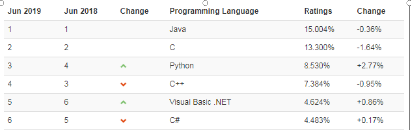

Java8新特性¶
主要内容¶
- Lambda表达式
- StreamAPI
- Optional
学习目标¶
- 能够理解函数式编程相对于面向对象的优点
- 能够掌握Lambda表达式的标准格式
- 能够使用Lambda标准格式
- 能够掌握Lambda表达式的省略格式与规则
- 能够通过Lambda使用自定义的接口（有且仅有一个抽象方法）
- 能够使用@FunctionalInterface注解
- 能够使用Supplier函数式接口
- 能够使用Consumer函数式接口
- 能够使用Function函数式接口
- 能够使用Predicate函数式接口
- 能够使用方法引用和构造器引用
- 能够理解流与集合相比的优点
- 能够理解流的延迟执行特点
- 能够通过集合、映射或数组获取流
- 能够掌握常用的流操作
- 能够使用Optional类包装对象并获取其中包装的对象
Java8新特性
Java8的新特征有很多，之前我们在学习接口时，学习了接口的静态方法和默认方法，在学习常用类时，学习了新版的日期时间API。今天我们来学习Java8最具革命性的两个新特性：Lambda表达式和StreamAPI。然后带领大家用Optioanl类解决最令人头疼的空指针异常。
1. Lambda表达式¶
1.1 函数式编程思想¶

在数学中，函数就是有输入量、输出量的一套计算方案，也就是“拿什么东西做什么事情”。编程中的函数，也有类似的概念，你调用我的时候，给我实参为形参赋值，然后通过运行方法体，给你返回一个结果。对于调用者来做，关注这个方法具备什么样的功能。相对而言，面向对象过分强调“必须通过对象的形式来做事情”，而函数式思想则尽量忽略面向对象的复杂语法——强调做什么，而不是以什么形式做。
- 面向对象的思想:
-
做一件事情,找一个能解决这个事情的对象,调用对象的方法,完成事情.
-
函数式编程思想:
- 只要能获取到结果,谁去做的,怎么做的都不重要,重视的是结果,不重视过程
Java8引入了Lambda表达式之后，Java也开始支持函数式编程。
Lambda表达式不是Java最早使用的，很多语言就支持Lambda表达式，例如：C++，C#，Python，Scala等。如果有Python或者Javascript的语言基础，对理解Lambda表达式有很大帮助，可以这么说lambda表达式其实就是实现SAM接口的语法糖，使得Java也算是支持函数式编程的语言。Lambda写的好可以极大的减少代码冗余，同时可读性也好过冗长的匿名内部类。
备注：“语法糖”是指使用更加方便，但是原理不变的代码语法。例如在遍历集合时使用的for-each语法，其实 底层的实现原理仍然是迭代器，这便是“语法糖”。从应用层面来讲，Java中的Lambda可以被当做是匿名内部 类的“语法糖”，但是二者在原理上是不同的。
1.1.1 冗余的匿名内部类¶
当需要启动一个线程去完成任务时，通常会通过java.lang.Runnable接口来定义任务内容，并使用java.lang.Thread类来启动该线程。代码如下：
public class Demo01Runnable {
public static void main(String[] args) {
// 匿名内部类
Runnable task = new Runnable() {
@Override
public void run() { // 覆盖重写抽象方法
System.out.println("多线程任务执行！");
}
};
new Thread(task).start(); // 启动线程
}
}
本着“一切皆对象”的思想，这种做法是无可厚非的：首先创建一个Runnable接口的匿名内部类对象来指定任务内容，再将其交给一个线程来启动。
代码分析：
对于Runnable的匿名内部类用法，可以分析出几点内容：
Thread类需要Runnable接口作为参数，其中的抽象run方法是用来指定线程任务内容的核心；- 为了指定
run的方法体，不得不需要Runnable接口的实现类； - 为了省去定义一个
RunnableImpl实现类的麻烦，不得不使用匿名内部类； - 必须覆盖重写抽象
run方法，所以方法名称、方法参数、方法返回值不得不再写一遍，且不能写错； - 而实际上，似乎只有方法体才是关键所在。
1.1.2 编程思想转换¶
做什么，而不是谁来做，怎么做
我们真的希望创建一个匿名内部类对象吗？不。我们只是为了做这件事情而不得不创建一个对象。我们真正希望做的事情是：将run方法体内的代码传递给Thread类知晓。
传递一段代码——这才是我们真正的目的。而创建对象只是受限于面向对象语法而不得不采取的一种手段方式。那，有没有更加简单的办法？如果我们将关注点从“怎么做”回归到“做什么”的本质上，就会发现只要能够更好地达到目的，过程与形式其实并不重要。
生活举例：

当我们需要从北京到上海时，可以选择高铁、汽车、骑行或是徒步。我们的真正目的是到达上海，而如何才能到达上海的形式并不重要，所以我们一直在探索有没有比高铁更好的方式——搭乘飞机。
而现在这种飞机（甚至是飞船）已经诞生：2014年3月Oracle所发布的Java 8（JDK 1.8）中，加入了Lambda表达式的重量级新特性，为我们打开了新世界的大门。
1.1.3 体验Lambda的更优写法¶
借助Java 8的全新语法，上述Runnable接口的匿名内部类写法可以通过更简单的Lambda表达式达到等效：
public class Demo02LambdaRunnable {
public static void main(String[] args) {
new Thread(() -> System.out.println("多线程任务执行！")).start(); // 启动线程
}
}
这段代码和刚才的执行效果是完全一样的，可以在1.8或更高的编译级别下通过。从代码的语义中可以看出：我们启动了一个线程，而线程任务的内容以一种更加简洁的形式被指定。
不再有“不得不创建接口对象”的束缚，不再有“抽象方法覆盖重写”的负担，就是这么简单！
1.2 函数式接口¶
lambda表达式其实就是实现SAM接口的语法糖，所谓SAM接口就是Single Abstract Method，即该接口中只有一个抽象方法需要实现，当然该接口可以包含其他非抽象方法。
其实只要满足“SAM”特征的接口都可以称为函数式接口，都可以使用Lambda表达式，但是如果要更明确一点，最好在声明接口时，加上@FunctionalInterface。一旦使用该注解来定义接口，编译器将会强制检查该接口是否确实有且仅有一个抽象方法，否则将会报错。
之前学过的SAM接口中，标记了@FunctionalInterface的函数式接口的有：Runnable，Comparator，FileFilter。
Java8在java.util.function新增了很多函数式接口：主要分为四大类，消费型、供给型、判断型、功能型。基本可以满足我们的开发需求。当然你也可以定义自己的函数式接口。
1.2.1 自定义函数式接口¶
只要确保接口中有且仅有一个抽象方法即可：
修饰符 interface 接口名称 {
public abstract 返回值类型 方法名称(可选参数信息);
// 其他非抽象方法内容
}
接口当中抽象方法的 public abstract 是可以省略的
例如：声明一个计算器Calculator接口，内含抽象方法calc可以对两个int数字进行计算，并返回结果：
public interface Calculator {
int calc(int a, int b);
}
在测试类中，声明一个如下方法：
public static void invokeCalc(int a, int b, Calculator calculator) {
int result = calculator.calc(a, b);
System.out.println("结果是：" + result);
}
下面进行测试：
public static void main(String[] args) {
invokeCalc(1, 2, (int a,int b)-> {return a+b;});
invokeCalc(1, 2, (int a,int b)-> {return a-b;});
invokeCalc(1, 2, (int a,int b)-> {return a*b;});
invokeCalc(1, 2, (int a,int b)-> {return a/b;});
invokeCalc(1, 2, (int a,int b)-> {return a%b;});
invokeCalc(1, 2, (int a,int b)-> {return a>b?a:b;});
}
1.2.2 消费型接口¶
消费型接口的抽象方法特点：有形参，但是返回值类型是void
| 接口名 | 抽象方法 | 描述 |
|---|---|---|
| Consumer |
void accept(T t) | 接收一个对象用于完成功能 |
| BiConsumer |
void accept(T t, U u) | 接收两个对象用于完成功能 |
| DoubleConsumer | void accept(double value) | 接收一个double值 |
| IntConsumer | void accept(int value) | 接收一个int值 |
| LongConsumer | void accept(long value) | 接收一个long值 |
| ObjDoubleConsumer |
void accept(T t, double value) | 接收一个对象和一个double值 |
| ObjIntConsumer |
void accept(T t, int value) | 接收一个对象和一个int值 |
| ObjLongConsumer |
void accept(T t, long value) | 接收一个对象和一个long值 |
1.2.3 供给型接口¶
这类接口的抽象方法特点：无参，但是无返回值
| 接口名 | 抽象方法 | 描述 |
|---|---|---|
| Supplier |
T get() | 返回一个对象 |
| BooleanSupplier | boolean getAsBoolean() | 返回一个boolean值 |
| DoubleSupplier | double getAsDouble() | 返回一个double值 |
| IntSupplier | int getAsInt() | 返回一个int值 |
| LongSupplier | long getAsLong() | 返回一个long值 |
1.2.4 判断型接口¶
这里接口的抽象方法特点：有参，但是返回值类型是boolean结果。
| 接口名 | 抽象方法 | 描述 |
|---|---|---|
| Predicate |
boolean test(T t) | 接收一个对象 |
| BiPredicate |
boolean test(T t, U u) | 接收两个对象 |
| DoublePredicate | boolean test(double value) | 接收一个double值 |
| IntPredicate | boolean test(int value) | 接收一个int值 |
| LongPredicate | boolean test(long value) | 接收一个long值 |
1.2.5 功能型接口¶
这类接口的抽象方法特点：既有参数又有返回值
| 接口名 | 抽象方法 | 描述 |
|---|---|---|
| Function |
R apply(T t) | 接收一个T类型对象，返回一个R类型对象结果 |
| UnaryOperator |
T apply(T t) | 接收一个T类型对象，返回一个T类型对象结果 |
| DoubleFunction |
R apply(double value) | 接收一个double值，返回一个R类型对象 |
| IntFunction |
R apply(int value) | 接收一个int值，返回一个R类型对象 |
| LongFunction |
R apply(long value) | 接收一个long值，返回一个R类型对象 |
| ToDoubleFunction |
double applyAsDouble(T value) | 接收一个T类型对象，返回一个double |
| ToIntFunction |
int applyAsInt(T value) | 接收一个T类型对象，返回一个int |
| ToLongFunction |
long applyAsLong(T value) | 接收一个T类型对象，返回一个long |
| DoubleToIntFunction | int applyAsInt(double value) | 接收一个double值，返回一个int结果 |
| DoubleToLongFunction | long applyAsLong(double value) | 接收一个double值，返回一个long结果 |
| IntToDoubleFunction | double applyAsDouble(int value) | 接收一个int值，返回一个double结果 |
| IntToLongFunction | long applyAsLong(int value) | 接收一个int值，返回一个long结果 |
| LongToDoubleFunction | double applyAsDouble(long value) | 接收一个long值，返回一个double结果 |
| LongToIntFunction | int applyAsInt(long value) | 接收一个long值，返回一个int结果 |
| DoubleUnaryOperator | double applyAsDouble(double operand) | 接收一个double值，返回一个double |
| IntUnaryOperator | int applyAsInt(int operand) | 接收一个int值，返回一个int结果 |
| LongUnaryOperator | long applyAsLong(long operand) | 接收一个long值，返回一个long结果 |
| BiFunction |
R apply(T t, U u) | 接收一个T类型和一个U类型对象，返回一个R类型对象结果 |
| BinaryOperator |
T apply(T t, T u) | 接收两个T类型对象，返回一个T类型对象结果 |
| ToDoubleBiFunction |
double applyAsDouble(T t, U u) | 接收一个T类型和一个U类型对象，返回一个double |
| ToIntBiFunction |
int applyAsInt(T t, U u) | 接收一个T类型和一个U类型对象，返回一个int |
| ToLongBiFunction |
long applyAsLong(T t, U u) | 接收一个T类型和一个U类型对象，返回一个long |
| DoubleBinaryOperator | double applyAsDouble(double left, double right) | 接收两个double值，返回一个double结果 |
| IntBinaryOperator | int applyAsInt(int left, int right) | 接收两个int值，返回一个int结果 |
| LongBinaryOperator | long applyAsLong(long left, long right) | 接收两个long值，返回一个long结果 |
1.3 Lambda表达式语法¶
Lambda表达式是用来给【函数式接口】的变量或形参赋值用的。
其实本质上，Lambda表达式是用于实现【函数式接口】的“抽象方法”
Lambda表达式语法格式
(形参列表) -> {Lambda体}
说明：
- (形参列表)它就是你要赋值的函数式接口的抽象方法的(形参列表)，照抄
- {Lambda体}就是实现这个抽象方法的方法体
- ->称为Lambda操作符（减号和大于号中间不能有空格，而且必须是英文状态下半角输入方式）
优化：Lambda表达式可以精简
- 当{Lambda体}中只有一句语句时，可以省略{}和{;}
- 当{Lambda体}中只有一句语句时，并且这个语句还是一个return语句，那么return也可以省略，但是如果{;}没有省略的话，return是不能省略的
- (形参列表)的类型可以省略
- 当(形参列表)的形参个数只有一个，那么可以把数据类型和()一起省略，但是形参名不能省略
- 当(形参列表)是空参时，()不能省略
示例代码：
public class TestLambdaGrammer {
@Test
public void test1(){
//用Lambda表达式给Runnable接口的形参或变量赋值
/*
* 确定两件事，才能写好lambda表达式
* （1）这个接口的抽象方法长什么样：
* public void run()
* （2）这个抽象方法的实现要干什么事
* 例如：我要打印“hello lambda"
*/
Runnable r = () -> {System.out.println("hello lambda");};
}
@Test
public void test2(){
//lambda体省略了{;}
Runnable r = () -> System.out.println("hello lambda");
}
@Test
public void test3(){
String[] arr = {"hello","Hello","java","chai"};
//为arr数组排序，但是，想要不区分大小写
/*
* public static <T> void sort(T[] a,Comparator<? super T> c)
* 这里要用Lambda表达式为Comparator类型的形参赋值
*
* 两件事：
* （1）这个接口的抽象方法： int compare(T o1, T o2)
* （2）这个抽象方法要做什么事？
* 例如：这里要对String类型的元素，不区分大小写的比较大小
*/
// Arrays.sort(arr, (String o1, String o2) -> {return o1.compareToIgnoreCase(o2);});
//省略了{return ;}
// Arrays.sort(arr, (String o1, String o2) -> o1.compareToIgnoreCase(o2));
//省略了两个String
Arrays.sort(arr, (o1, o2) -> o1.compareToIgnoreCase(o2));
for (String string : arr) {
System.out.println(string);
}
}
@Test
public void test4(){
ArrayList<String> list = new ArrayList<>();
list.add("hello");
list.add("java");
list.add("world");
/*
* JDK1.8给Collection系列的集合，准确的讲是在Iterable接口中，增加了一个默认方法
* default void forEach(Consumer<? super T> action)
* 这个方法是用来遍历集合等的。代替原来的foreach循环的。
*
* 这个方法的形参是Consumer接口类型，它是函数式接口中消费型接口的代表
* 我现在调用这个方法，想要用Lambda表达式为Consumer接口类型形参赋值
*
* 两件事：
* （1）它的抽象方法： void accept(T t)
* （2）抽象方法的实现要完成的事是什么
* 例如：这里要打印这个t
*/
// list.forEach((String t) -> {System.out.println(t);});
//省略{;}
// list.forEach((String t) -> System.out.println(t));
//省略String
// list.forEach((t) -> System.out.println(t));
//可以省略形参()
list.forEach(t -> System.out.println(t));
}
}
1.4 Lambda表达式练习¶
练习1：无参无返回值形式¶
假如有自定义函数式接口Call如下：
public interface Call {
void shout();
}
在测试类中声明一个如下方法：
public static void callSomething(Call call){
call.shout();
}
在测试类的main方法中调用callSomething方法，并用Lambda表达式为形参call赋值，可以喊出任意你想说的话。
public class TestLambda {
public static void main(String[] args) {
callSomething(()->System.out.println("回家吃饭"));
callSomething(()->System.out.println("我爱你"));
callSomething(()->System.out.println("滚蛋"));
callSomething(()->System.out.println("回来"));
}
public static void callSomething(Call call){
call.shout();
}
}
interface Call {
void shout();
}
练习2：消费型接口¶
代码示例：Consumer
在JDK1.8中Collection集合接口的父接口Iterable接口中增加了一个默认方法：
public default void forEach(Consumer<? super T> action)遍历Collection集合的每个元素，执行“xxx消费型”操作。
在JDK1.8中Map集合接口中增加了一个默认方法：
public default void forEach(BiConsumer<? super K,? super V> action)遍历Map集合的每对映射关系，执行“xxx消费型”操作。
案例：
（1）创建一个Collection系列的集合，添加你知道的编程语言，调用forEach方法遍历查看
（2）创建一个Map系列的集合，添加一些(key,value)键值对，例如，添加编程语言排名和语言名称，调用forEach方法遍历查看

示例代码：
@Test
public void test1(){
List<String> list = Arrays.asList("java","c","python","c++","VB","C#");
list.forEach(s -> System.out.println(s));
}
@Test
public void test2(){
HashMap<Integer,String> map = new HashMap<>();
map.put(1, "java");
map.put(2, "c");
map.put(3, "python");
map.put(4, "c++");
map.put(5, "VB");
map.put(6, "C#");
map.forEach((k,v) -> System.out.println(k+"->"+v));
}
练习3：供给型接口¶
代码示例：Supplier
在JDK1.8中增加了StreamAPI，java.util.stream.Stream
public static <T> Stream<T> generate(Supplier<T> s)可以创建Stream的对象。而又包含一个forEach方法可以遍历流中的元素：public void forEach(Consumer<? super T> action)。
案例：
现在请调用Stream的generate方法，来产生一个流对象，并调用Math.random()方法来产生数据，为Supplier函数式接口的形参赋值。最后调用forEach方法遍历流中的数据查看结果。
@Test
public void test2(){
Stream.generate(() -> Math.random()).forEach(num -> System.out.println(num));
}
练习4：功能型接口¶
代码示例：Funtion
在JDK1.8时Map接口增加了很多方法，例如：
public default void replaceAll(BiFunction<? super K,? super V,? extends V> function)按照function指定的操作替换map中的value。
public default void forEach(BiConsumer<? super K,? super V> action)遍历Map集合的每对映射关系，执行“xxx消费型”操作。
案例：
（1）声明一个Employee员工类型，包含编号、姓名、薪资。
（2）添加n个员工对象到一个HashMap
（3）调用Map的forEach遍历集合
（4）调用Map的replaceAll方法，将其中薪资低于10000元的，薪资设置为10000。
（5）再次调用Map的forEach遍历集合查看结果
Employee类：
class Employee{
private int id;
private String name;
private double salary;
public Employee(int id, String name, double salary) {
super();
this.id = id;
this.name = name;
this.salary = salary;
}
public Employee() {
super();
}
public int getId() {
return id;
}
public void setId(int id) {
this.id = id;
}
public String getName() {
return name;
}
public void setName(String name) {
this.name = name;
}
public double getSalary() {
return salary;
}
public void setSalary(double salary) {
this.salary = salary;
}
@Override
public String toString() {
return "Employee [id=" + id + ", name=" + name + ", salary=" + salary + "]";
}
}
测试类：
import java.util.HashMap;
public class TestLambda {
public static void main(String[] args) {
HashMap<Integer,Employee> map = new HashMap<>();
Employee e1 = new Employee(1, "张三", 8000);
Employee e2 = new Employee(2, "李四", 9000);
Employee e3 = new Employee(3, "王五", 10000);
Employee e4 = new Employee(4, "赵六", 11000);
Employee e5 = new Employee(5, "钱七", 12000);
map.put(e1.getId(), e1);
map.put(e2.getId(), e2);
map.put(e3.getId(), e3);
map.put(e4.getId(), e4);
map.put(e5.getId(), e5);
map.forEach((k,v) -> System.out.println(k+"="+v));
System.out.println();
map.replaceAll((k,v)->{
if(v.getSalary()<10000){
v.setSalary(10000);
}
return v;
});
map.forEach((k,v) -> System.out.println(k+"="+v));
}
}
练习5：判断型接口¶
代码示例：Predicate
JDK1.8时，Collecton
public default boolean removeIf(Predicate<? super E> filter) 用于删除集合中满足filter指定的条件判断的。
public default void forEach(Consumer<? super T> action)遍历Collection集合的每个元素，执行“xxx消费型”操作。
案例：
（1）添加一些字符串到一个Collection集合中
（2）调用forEach遍历集合
（3）调用removeIf方法，删除其中字符串的长度<5的
（4）再次调用forEach遍历集合
import java.util.ArrayList;
public class TestLambda {
public static void main(String[] args) {
ArrayList<String> list = new ArrayList<>();
list.add("hello");
list.add("java");
list.add("atguigu");
list.add("ok");
list.add("yes");
list.forEach(str->System.out.println(str));
System.out.println();
list.removeIf(str->str.length()<5);
list.forEach(str->System.out.println(str));
}
}
练习6：判断型接口¶
案例：
（1）声明一个Employee员工类型，包含编号、姓名、性别，年龄，薪资。
（2）声明一个EmployeeSerice员工管理类，包含一个ArrayList
（3）在EmployeeSerice员工管理类中，声明一个方法：ArrayList
（4）在测试类中创建EmployeeSerice员工管理类的对象，并调用get方法，分别获取：
- 所有员工对象
- 所有年龄超过35的员工
- 所有薪资高于15000的女员工
- 所有编号是偶数的员工
- 名字是“张三”的员工
- 年龄超过25，薪资低于10000的男员工
示例代码：
Employee类：
public class Employee{
private int id;
private String name;
private char gender;
private int age;
private double salary;
public Employee(int id, String name, char gender, int age, double salary) {
super();
this.id = id;
this.name = name;
this.gender = gender;
this.age = age;
this.salary = salary;
}
public Employee() {
super();
}
public int getId() {
return id;
}
public void setId(int id) {
this.id = id;
}
public String getName() {
return name;
}
public void setName(String name) {
this.name = name;
}
public double getSalary() {
return salary;
}
public void setSalary(double salary) {
this.salary = salary;
}
@Override
public String toString() {
return "Employee [id=" + id + ", name=" + name + ", gender=" + gender + ", age=" + age + ", salary=" + salary
+ "]";
}
}
员工管理类：
class EmployeeService{
private ArrayList<Employee> all;
public EmployeeService(){
all = new ArrayList<Employee>();
all.add(new Employee(1, "张三", '男', 33, 8000));
all.add(new Employee(2, "翠花", '女', 23, 18000));
all.add(new Employee(3, "无能", '男', 46, 8000));
all.add(new Employee(4, "李四", '女', 23, 9000));
all.add(new Employee(5, "老王", '男', 23, 15000));
all.add(new Employee(6, "大嘴", '男', 23, 11000));
}
public ArrayList<Employee> get(Predicate<Employee> p){
ArrayList<Employee> result = new ArrayList<Employee>();
for (Employee emp : all) {
if(p.test(emp)){
result.add(emp);
}
}
return result;
}
}
测试类：
public class TestLambda {
public static void main(String[] args) {
EmployeeService es = new EmployeeService();
es.get(e -> true).forEach(e->System.out.println(e));
System.out.println();
es.get(e -> e.getAge()>35).forEach(e->System.out.println(e));
System.out.println();
es.get(e -> e.getSalary()>15000 && e.getGender()=='女').forEach(e->System.out.println(e));
System.out.println();
es.get(e -> e.getId()%2==0).forEach(e->System.out.println(e));
System.out.println();
es.get(e -> "张三".equals(e.getName())).forEach(e->System.out.println(e));
System.out.println();
es.get(e -> e.getAge()>25 && e.getSalary()<10000 && e.getGender()=='男').forEach(e->System.out.println(e));
}
}
1.5 方法引用与构造器引用¶
Lambda表达式是可以简化函数式接口的变量与形参赋值的语法。而方法引用和构造器引用是为了简化Lambda表达式的。当Lambda表达式满足一些特殊的情况时，还可以再简化：
（1）Lambda体只有一句语句，并且是通过调用一个对象的/类现有的方法来完成的
例如：System.out对象，调用println()方法来完成Lambda体
Math类，调用random()静态方法来完成Lambda体
（2）并且Lambda表达式的形参正好是给该方法的实参
例如：t->System.out.println(t)
() -> Math.random() 都是无参
1.5.1 方法引用¶
方法引用的语法格式：
（1）实例对象名::实例方法
（2）类名::静态方法
（3）类名::实例方法
说明：
- ::称为方法引用操作符（两个:中间不能有空格，而且必须英文状态下半角输入）
- Lambda表达式的形参列表，全部在Lambda体中使用上了，要么是作为调用方法的对象，要么是作为方法的实参。
- 在整个Lambda体中没有额外的数据。
@Test
public void test4(){
// Runnable r = () -> System.out.println("hello lambda");
Runnable r = System.out::println;//打印空行
//不能简化方法引用，因为"hello lambda"这个无法省略
}
@Test
public void test3(){
String[] arr = {"Hello","java","chai"};
// Arrays.sort(arr, (s1,s2) -> s1.compareToIgnoreCase(s2));
//用方法引用简化
/*
* Lambda表达式的形参，第一个（例如：s1），正好是调用方法的对象，剩下的形参(例如:s2)正好是给这个方法的实参
*/
Arrays.sort(arr, String::compareToIgnoreCase);
}
@Test
public void test2(){
// Stream<Double> stream = Stream.generate(() -> Math.random());
//用方法引用简化
Stream<Double> stream = Stream.generate(Math::random);
}
@Test
public void test1(){
List<Integer> list = Arrays.asList(1,3,4,8,9);
//list.forEach(t -> System.out.println(t));
//用方法再简化
list.forEach(System.out::println);
}
1.5.2 构造器引用¶
（1）当Lambda表达式是创建一个对象，并且满足Lambda表达式形参，正好是给创建这个对象的构造器的实参列表。
（2） 当Lambda表达式是创建一个数组对象，并且满足Lambda表达式形参，正好是给创建这个数组对象的长度
构造器引用的语法格式：
- 类名::new
- 数组类型名::new
示例代码：
public class TestMethodReference {
@Test
public void teset04() {
Stream<Integer> stream = Stream.of(1,2,3);
Stream<int[]> map = stream.map(int[]::new);
}
//这个方法是模仿HashMap中，把你指定的数组的长度纠正为2的n次方的代码
//createArray()的作用是，创建一个长度为2的n次方的数组
public <R> R[] createArray(Function<Integer,R[]> fun,int length){
int n = length - 1;
n |= n >>> 1;
n |= n >>> 2;
n |= n >>> 4;
n |= n >>> 8;
n |= n >>> 16;
length = n < 0 ? 1 : n + 1;
return fun.apply(length);
}
@Test
public void test3(){
/*
* Function是一个函数式接口，可以用Lambda表达式赋值
* Function<T,R>的抽象方法 R apply(T t)
*
* createArray这个方法中用的是Function<Integer,R[]> fun。说明T类型已经指定为Integer
* 说明
*/
// Function<Integer,String[]> f = (Integer len) -> new String[len];
//因为Lambda体是在创建一个数组对象完成的，而且Lambda表达式的形参正好是创建数组用的长度
//通过构造器引用省略
Function<Integer,String[]> f = String[]::new;
String[] array = createArray(f, 10);
System.out.println(array.length);//16
}
@Test
public void teset02() {
Stream<String> stream = Stream.of("1.0","2.3","4.4");
// Stream<BigDecimal> stream2 = stream.map(num -> new BigDecimal(num));
Stream<BigDecimal> stream2 = stream.map(BigDecimal::new);
}
@Test
public void test1(){
// Supplier<String> s = () -> new String();//通过供给型接口，提供一个空字符串对象
//构造器引用
Supplier<String> s = String::new;//通过供给型接口，提供一个空字符串对象
}
}
2. StreamAPI¶
Java8中有两大最为重要的改变。第一个是 Lambda 表达式；另外一个则是 Stream API。
Stream API ( java.util.stream) 把真正的函数式编程风格引入到Java中。这是目前为止对Java类库最好的补充，因为Stream API可以极大提高Java程序员的生产力，让程序员写出高效率、干净、简洁的代码。
Stream 是 Java8 中处理集合的关键抽象概念，它可以指定你希望对集合进行的操作，可以执行非常复杂的查找、过滤和映射数据等操作。 使用Stream API 对集合数据进行操作，就类似于使用 SQL 执行的数据库查询。也可以使用 Stream API 来并行执行操作。简言之，Stream API 提供了一种高效且易于使用的处理数据的方式。
Stream是数据渠道，用于操作数据源（集合、数组等）所生成的元素序列。“集合讲的是数据，负责存储数据，Stream流讲的是计算，负责处理数据！”
注意：
①Stream 自己不会存储元素。
②Stream 不会改变源对象。每次处理都会返回一个持有结果的新Stream。
③Stream 操作是延迟执行的。这意味着他们会等到需要结果的时候才执行。
Stream 的操作三个步骤：
1- 创建 Stream：通过一个数据源（如：集合、数组），获取一个流
2- 中间操作：中间操作是个操作链，对数据源的数据进行n次处理，但是在终结操作前，并不会真正执行。
3- 终止操作：一旦执行终止操作，就执行中间操作链，最终产生结果并结束Stream。

2.1 创建Stream¶
1、创建 Stream方式一：通过集合
Java8 中的 Collection 接口被扩展，提供了两个获取流的方法：
-
public default Stream
stream() : 返回一个顺序流 -
public default Stream
parallelStream() : 返回一个并行流
2、创建 Stream方式二：通过数组
Java8 中的 Arrays 的静态方法 stream() 可以获取数组流：
- public static
Stream stream(T[] array): 返回一个流
重载形式，能够处理对应基本类型的数组：
- public static IntStream stream(int[] array)：返回一个整型数据流
- public static LongStream stream(long[] array)：返回一个长整型数据流
- public static DoubleStream stream(double[] array)：返回一个浮点型数据流
3、创建 Stream方式三：通过Stream的of()
可以调用Stream类静态方法 of(), 通过显示值创建一个流。它可以接收任意数量的参数。
- public static
Stream of(T... values) : 返回一个顺序流
4、创建 Stream方式四：创建无限流
可以使用静态方法 Stream.iterate() 和 Stream.generate(), 创建无限流。
- public static
Stream iterate(final T seed, final UnaryOperator f):返回一个无限流 - public static
Stream generate(Supplier s) ：返回一个无限流
package com.atguigu.test06;
import java.util.Arrays;
import java.util.List;
import java.util.stream.IntStream;
import java.util.stream.Stream;
import org.junit.Test;
public class Test07StreamCreate {
@Test
public void test06(){
/*
* Stream<T> iterate(T seed, UnaryOperator<T> f)
* UnaryOperator接口，SAM接口，抽象方法：
*
* UnaryOperator<T> extends Function<T,T>
* T apply(T t)
*/
Stream<Integer> stream = Stream.iterate(1, num -> num+=2);
// stream = stream.limit(10);
stream.forEach(System.out::println);
}
@Test
public void test05(){
Stream<Double> stream = Stream.generate(Math::random);
stream.forEach(System.out::println);
}
@Test
public void test04(){
Stream<Integer> stream = Stream.of(1,2,3,4,5);
stream.forEach(System.out::println);
}
@Test
public void test03(){
String[] arr = {"hello","world"};
Stream<String> stream = Arrays.stream(arr);
}
@Test
public void test02(){
int[] arr = {1,2,3,4,5};
IntStream stream = Arrays.stream(arr);
}
@Test
public void test01(){
List<Integer> list = Arrays.asList(1,2,3,4,5);
//JDK1.8中，Collection系列集合增加了方法
Stream<Integer> stream = list.stream();
}
}
2.2 中间操作¶
多个中间操作可以连接起来形成一个流水线，除非流水线上触发终止操作，否则中间操作不会执行任何的处理！而在终止操作时一次性全部处理，称为“惰性求值”。
| 方 法 | 描 述 |
|---|---|
| filter(Predicate p) | 接收 Lambda ， 从流中排除某些元素 |
| distinct() | 筛选，通过流所生成元素的equals() 去除重复元素 |
| limit(long maxSize) | 截断流，使其元素不超过给定数量 |
| skip(long n) | 跳过元素，返回一个扔掉了前 n 个元素的流。若流中元素不足 n 个，则返回一个空流。与 limit(n) 互补 |
| peek(Consumer action) | 接收Lambda，对流中的每个数据执行Lambda体操作 |
| sorted() | 产生一个新流，其中按自然顺序排序 |
| sorted(Comparator com) | 产生一个新流，其中按比较器顺序排序 |
| map(Function f) | 接收一个函数作为参数，该函数会被应用到每个元素上，并将其映射成一个新的元素。 |
| mapToDouble(ToDoubleFunction f) | 接收一个函数作为参数，该函数会被应用到每个元素上，产生一个新的 DoubleStream。 |
| mapToInt(ToIntFunction f) | 接收一个函数作为参数，该函数会被应用到每个元素上，产生一个新的 IntStream。 |
| mapToLong(ToLongFunction f) | 接收一个函数作为参数，该函数会被应用到每个元素上，产生一个新的 LongStream。 |
| flatMap(Function f) | 接收一个函数作为参数，将流中的每个值都换成另一个流，然后把所有流连接成一个流 |
package com.atguigu.test06;
import java.util.Arrays;
import java.util.stream.Stream;
import org.junit.Test;
public class Test08StreamMiddle {
@Test
public void test12(){
String[] arr = {"hello","world","java"};
Arrays.stream(arr)
.flatMap(t -> Stream.of(t.split("|")))//Function<T,R>接口抽象方法 R apply(T t) 现在的R是一个Stream
.forEach(System.out::println);
}
@Test
public void test11(){
String[] arr = {"hello","world","java"};
Arrays.stream(arr)
.map(t->t.toUpperCase())
.forEach(System.out::println);
}
@Test
public void test10(){
Stream.of(1,2,3,4,5)
.map(t -> t+=1)//Function<T,R>接口抽象方法 R apply(T t)
.forEach(System.out::println);
}
@Test
public void test09(){
//希望能够找出前三个最大值，前三名最大的，不重复
Stream.of(11,2,39,4,54,6,2,22,3,3,4,54,54)
.distinct()
.sorted((t1,t2) -> -Integer.compare(t1, t2))//Comparator接口 int compare(T t1, T t2)
.limit(3)
.forEach(System.out::println);
}
@Test
public void test08(){
long count = Stream.of(1,2,3,4,5,6,2,2,3,3,4,4,5)
.distinct()
.peek(System.out::println) //Consumer接口的抽象方法 void accept(T t)
.count();
System.out.println("count="+count);
}
@Test
public void test07(){
Stream.of(1,2,3,4,5,6,2,2,3,3,4,4,5)
.skip(5)
.distinct()
.filter(t -> t%3==0)
.forEach(System.out::println);
}
@Test
public void test06(){
Stream.of(1,2,3,4,5,6,2,2,3,3,4,4,5)
.skip(5)
.forEach(System.out::println);
}
@Test
public void test05(){
Stream.of(1,2,2,3,3,4,4,5,2,3,4,5,6,7)
.distinct() //(1,2,3,4,5,6,7)
.filter(t -> t%2!=0) //(1,3,5,7)
.limit(3)
.forEach(System.out::println);
}
@Test
public void test04(){
Stream.of(1,2,3,4,5,6,2,2,3,3,4,4,5)
.limit(3)
.forEach(System.out::println);
}
@Test
public void test03(){
Stream.of(1,2,3,4,5,6,2,2,3,3,4,4,5)
.distinct()
.forEach(System.out::println);
}
@Test
public void test02(){
Stream.of(1,2,3,4,5,6)
.filter(t -> t%2==0)
.forEach(System.out::println);
}
@Test
public void test01(){
//1、创建Stream
Stream<Integer> stream = Stream.of(1,2,3,4,5,6);
//2、加工处理
//过滤：filter(Predicate p)
//把里面的偶数拿出来
/*
* filter(Predicate p)
* Predicate是函数式接口，抽象方法：boolean test(T t)
*/
stream = stream.filter(t -> t%2==0);
//3、终结操作：例如：遍历
stream.forEach(System.out::println);
}
}
2.3 终结操作¶
终端操作会从流的流水线生成结果。其结果可以是任何不是流的值，例如：List、Integer，甚至是 void。流进行了终止操作后，不能再次使用。
| 方法 | 描述 |
|---|---|
| boolean allMatch(Predicate p) | 检查是否匹配所有元素 |
| boolean anyMatch(Predicate p) | 检查是否至少匹配一个元素 |
| boolean noneMatch(Predicate p) | 检查是否没有匹配所有元素 |
| Optional |
返回第一个元素 |
| Optional |
返回当前流中的任意元素 |
| long count() | 返回流中元素总数 |
| Optional |
返回流中最大值 |
| Optional |
返回流中最小值 |
| void forEach(Consumer c) | 迭代 |
| T reduce(T iden, BinaryOperator b) | 可以将流中元素反复结合起来，得到一个值。返回 T |
| U reduce(BinaryOperator b) | 可以将流中元素反复结合起来，得到一个值。返回 Optional |
| R collect(Collector c) | 将流转换为其他形式。接收一个 Collector接口的实现，用于给Stream中元素做汇总的方法 |
Collector 接口中方法的实现决定了如何对流执行收集的操作(如收集到 List、Set、Map)。另外， Collectors 实用类提供了很多静态方法，可以方便地创建常见收集器实例。
package com.atguigu.test06;
import java.util.List;
import java.util.Optional;
import java.util.stream.Collectors;
import java.util.stream.Stream;
import org.junit.Test;
public class Test09StreamEnding {
@Test
public void test14(){
List<Integer> list = Stream.of(1,2,4,5,7,8)
.filter(t -> t%2==0)
.collect(Collectors.toList());
System.out.println(list);
}
@Test
public void test13(){
Optional<Integer> max = Stream.of(1,2,4,5,7,8)
.reduce((t1,t2) -> t1>t2?t1:t2);//BinaryOperator接口 T apply(T t1, T t2)
System.out.println(max);
}
@Test
public void test12(){
Integer reduce = Stream.of(1,2,4,5,7,8)
.reduce(0, (t1,t2) -> t1+t2);//BinaryOperator接口 T apply(T t1, T t2)
System.out.println(reduce);
}
@Test
public void test11(){
Optional<Integer> max = Stream.of(1,2,4,5,7,8)
.max((t1,t2) -> Integer.compare(t1, t2));
System.out.println(max);
}
@Test
public void test10(){
Optional<Integer> opt = Stream.of(1,2,4,5,7,8)
.filter(t -> t%3==0)
.findFirst();
System.out.println(opt);
}
@Test
public void test09(){
Optional<Integer> opt = Stream.of(1,2,3,4,5,7,9)
.filter(t -> t%3==0)
.findFirst();
System.out.println(opt);
}
@Test
public void test08(){
Optional<Integer> opt = Stream.of(1,3,5,7,9).findFirst();
System.out.println(opt);
}
@Test
public void test04(){
boolean result = Stream.of(1,3,5,7,9)
.anyMatch(t -> t%2==0);
System.out.println(result);
}
@Test
public void test03(){
boolean result = Stream.of(1,3,5,7,9)
.allMatch(t -> t%2!=0);
System.out.println(result);
}
@Test
public void test02(){
long count = Stream.of(1,2,3,4,5)
.count();
System.out.println("count = " + count);
}
@Test
public void test01(){
Stream.of(1,2,3,4,5)
.forEach(System.out::println);
}
}
2.4 练习¶
案例：
现在有两个 ArrayList 集合存储队伍当中的多个成员姓名，要求使用传统的for循环（或增强for循环）依次进行以 下若干操作步骤： 1. 第一个队伍只要名字为3个字的成员姓名；存储到一个新集合中。 2. 第一个队伍筛选之后只要前3个人；存储到一个新集合中。 3. 第二个队伍只要姓张的成员姓名；存储到一个新集合中。 4. 第二个队伍筛选之后不要前2个人；存储到一个新集合中。 5. 将两个队伍合并为一个队伍；存储到一个新集合中。 6. 根据姓名创建 Person 对象；存储到一个新集合中。 7. 打印整个队伍的Person对象信息。
Person 类的代码为：
public class Person {
private String name;
public Person() {}
public Person(String name) {
this.name = name;
}
public String getName() {
return name;
}
public void setName(String name) {
this.name = name;
}
@Override
public String toString() {
return "Person{name='" + name + "'}";
}
}
两个队伍（集合）的代码如下：
public static void main(String[] args) {
//第一支队伍
ArrayList<String> one = new ArrayList<>();
one.add("迪丽热巴");
one.add("宋远桥");
one.add("苏星河");
one.add("石破天");
one.add("石中玉");
one.add("老子");
one.add("庄子");
one.add("洪七公");
//第二支队伍
ArrayList<String> two = new ArrayList<>();
two.add("古力娜扎");
two.add("张无忌");
two.add("赵丽颖");
two.add("张三丰");
two.add("尼古拉斯赵四");
two.add("张天爱");
two.add("张二狗");
// ....编写代码完成题目要求
}
参考答案：
public static void main(String[] args) {
//第一支队伍
ArrayList<String> one = new ArrayList<>();
one.add("迪丽热巴");
one.add("宋远桥");
one.add("苏星河");
one.add("石破天");
one.add("石中玉");
one.add("老子");
one.add("庄子");
one.add("洪七公");
//第二支队伍
ArrayList<String> two = new ArrayList<>();
two.add("古力娜扎");
two.add("张无忌");
two.add("赵丽颖");
two.add("张三丰");
two.add("尼古拉斯赵四");
two.add("张天爱");
two.add("张二狗");
// 第一个队伍只要名字为3个字的成员姓名；
// 第一个队伍筛选之后只要前3个人；
Stream<String> streamOne = one.stream().filter(s ‐> s.length() == 3).limit(3);
// 第二个队伍只要姓张的成员姓名；
// 第二个队伍筛选之后不要前2个人；
Stream<String> streamTwo = two.stream().filter(s ‐> s.startsWith("张")).skip(2);
// 将两个队伍合并为一个队伍；
// 根据姓名创建Person对象；
// 打印整个队伍的Person对象信息。
Stream.concat(streamOne, streamTwo).map(Person::new).forEach(System.out::println);
}
3. Optional类¶
到目前为止，臭名昭著的空指针异常是导致Java应用程序失败的最常见原因。以前，为了解决空指针异常，Google公司著名的Guava项目引入了Optional类，Guava通过使用检查空值的方式来防止代码污染，它鼓励程序员写更干净的代码。受到Google Guava的启发，Optional类已经成为Java 8类库的一部分。
Optional实际上是个容器：它可以保存类型T的值，或者仅仅保存null。Optional提供很多有用的方法，这样我们就不用显式进行空值检测。
3.1 API¶
1、如何创建Optional对象？或者说如何用Optional来装值对象或null值
（1）static
（2）static
（3）static
2、如何从Optional容器中取出所包装的对象呢？
（1）T get() ：要求Optional容器必须非空
T get()与of(T value)使用是安全的
（2）T orElse(T other) ：
orElse(T other) 与ofNullable(T value)配合使用，
如果Optional容器中非空，就返回所包装值，如果为空，就用orElse(T other)other指定的默认值（备胎）代替
（3）T orElseGet(Supplier<? extends T> other) ：
如果Optional容器中非空，就返回所包装值，如果为空，就用Supplier接口的Lambda表达式提供的值代替
（4）
如果Optional容器中非空，就返回所包装值，如果为空，就抛出你指定的异常类型代替原来的NoSuchElementException
3、其他方法
（1）boolean isPresent() ：判断Optional容器中的值是否存在
（2）void ifPresent(Consumer<? super T> consumer) ：
判断Optional容器中的值是否存在，如果存在，就对它进行Consumer指定的操作，如果不存在就不做
（3） Optional map(Function<? super T,? extends U> mapper)
判断Optional容器中的值是否存在，如果存在，就对它进行Function接口指定的操作，如果不存在就不做
package com.atguigu.test07;
import java.util.ArrayList;
import java.util.Optional;
import org.junit.Test;
public class TestOptional {
@Test
public void test9(){
String str = "Hello";
Optional<String> opt = Optional.ofNullable(str);
//判断是否是纯字母单词，如果是，转为大写，否则保持不变
String result = opt.filter(s->s.matches("[a-zA-Z]+")).
map(s -> s.toLowerCase()).
orElse(str);
System.out.println(result);
}
@Test
public void test8(){
String str = null;
Optional<String> opt = Optional.ofNullable(str);
String string = opt.orElseThrow(()->new RuntimeException("值不存在"));
System.out.println(string);
}
@Test
public void test7(){
String str = null;
Optional<String> opt = Optional.ofNullable(str);
String string = opt.orElseGet(String::new);
System.out.println(string);
}
@Test
public void test6(){
String str = "hello";
Optional<String> opt = Optional.ofNullable(str);
String string = opt.orElse("atguigu");
System.out.println(string);
}
@Test
public void test5(){
String str = null;
Optional<String> opt = Optional.ofNullable(str);
// System.out.println(opt.get());//java.util.NoSuchElementException: No value present
}
@Test
public void test4(){
String str = "hello";
Optional<String> opt = Optional.of(str);
String string = opt.get();
System.out.println(string);
}
@Test
public void test3(){
String str = null;
Optional<String> opt = Optional.ofNullable(str);
System.out.println(opt);
}
@Test
public void test2(){
String str = "hello";
Optional<String> opt = Optional.of(str);
System.out.println(opt);
}
}
3.2 练习¶
练习1¶
案例：
（1）声明一个Girl类型，包含姓名（String）属性
（2）声明一个Boy类型，包含姓名（String），女朋友（Girl）属性
（3）在测试类中，创建一个Boy对象，并
如果他有女朋友，显示他女朋友名称；
如果他没有女朋友，他的女朋友默认为“嫦娥”，即只能欣赏“嫦娥”了
class Girl{
private String name;
public Girl(String name) {
super();
this.name = name;
}
public String getName() {
return name;
}
public void setName(String name) {
this.name = name;
}
@Override
public String toString() {
return "Girl [name=" + name + "]";
}
}
class Boy{
private String name;
private Girl girlFriend;
public Boy(String name, Girl girlFriend) {
super();
this.name = name;
this.girlFriend = girlFriend;
}
public String getName() {
return name;
}
public void setName(String name) {
this.name = name;
}
public Girl getGirlFriend() {
return girlFriend;
}
public void setGirlFriend(Girl girlFriend) {
this.girlFriend = girlFriend;
}
@Override
public String toString() {
return "Boy [name=" + name + ", girlFriend=" + girlFriend + "]";
}
}
测试类
public static void main(String[] args) {
// Boy boy = new Boy("张三",null);
Boy boy = new Boy("张三",new Girl("翠翠"));
Optional<Girl> grilFriend = Optional.ofNullable(boy.getGirlFriend());
Optional.of(grilFriend.orElse(new Girl("嫦娥"))).ifPresent(g->System.out.println(g));
}
练习2¶
案例：
（1）声明学生类，包含姓名和年龄
（2）添加几个学生对象到一个ArrayList
（3）对集合中的学生进行操作，找出年龄大于30岁的，并取出第一个学生，如果没有这样的学生，用无参构造new一个学生对象，打印学生信息
学生类示例代码：
class Student{
private String name;
private int age;
public Student(String name, int age) {
super();
this.name = name;
this.age = age;
}
public Student() {
super();
}
public String getName() {
return name;
}
public void setName(String name) {
this.name = name;
}
public int getAge() {
return age;
}
public void setAge(int age) {
this.age = age;
}
@Override
public String toString() {
return "Student [name=" + name + ", age=" + age + "]";
}
}
测试类
@Test
public void test1(){
ArrayList<Student> list = new ArrayList<>();
list.add(new Student("张三", 23));
//...
//取出流中第一个年龄大于30岁的学生的年龄，并打印它的年龄，如果没有，用无参构造创建一个学生对象
Student stu = list.stream()
.filter(s -> s.getAge()>30)
.findFirst().orElse(new Student());
System.out.println("学生的年龄：" + stu.getAge());
}
本文总阅读量次